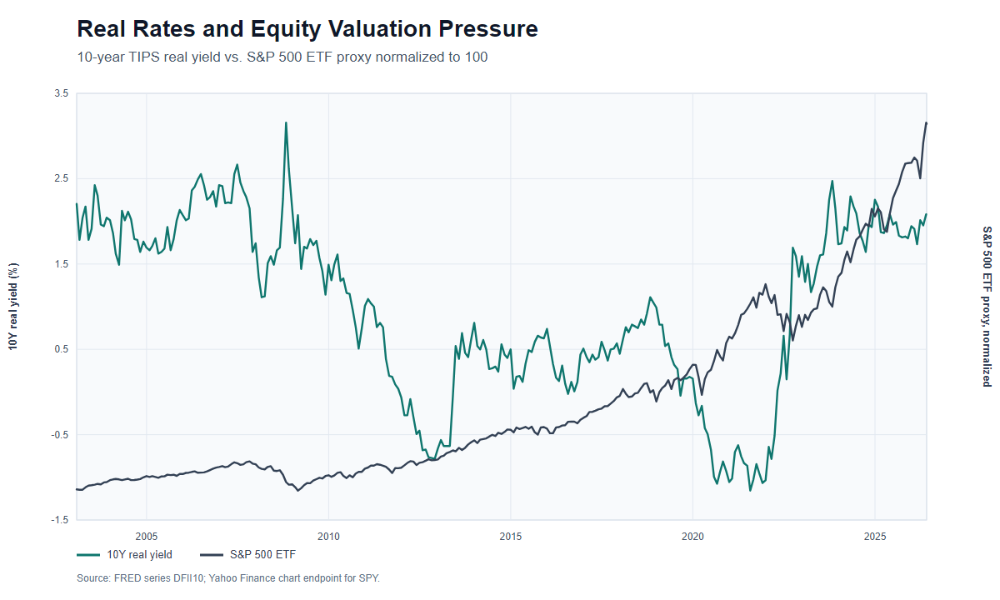
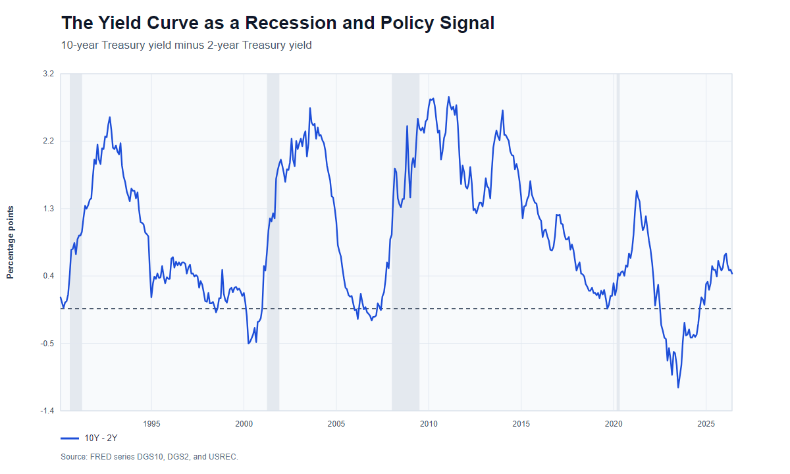
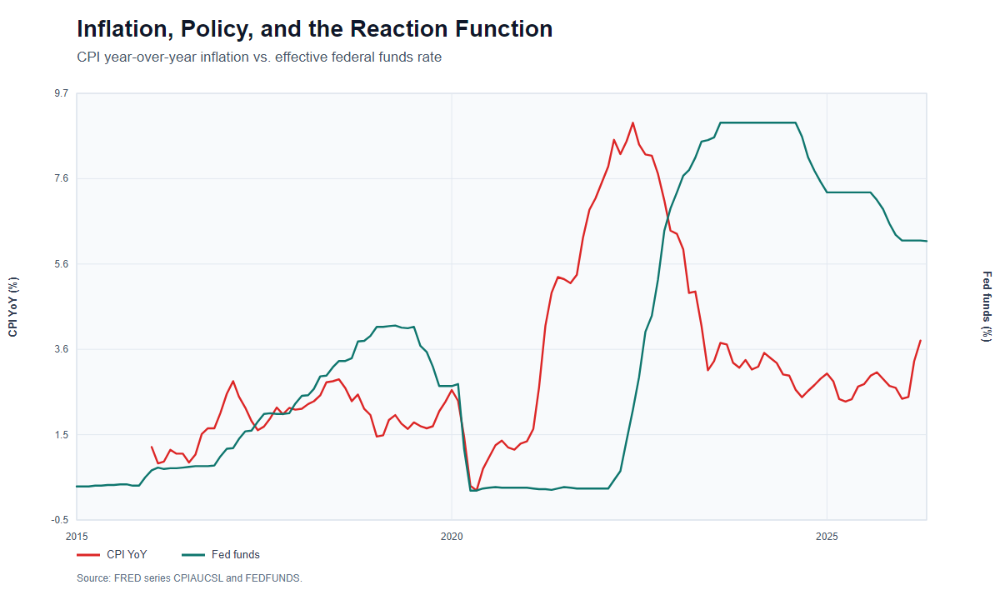
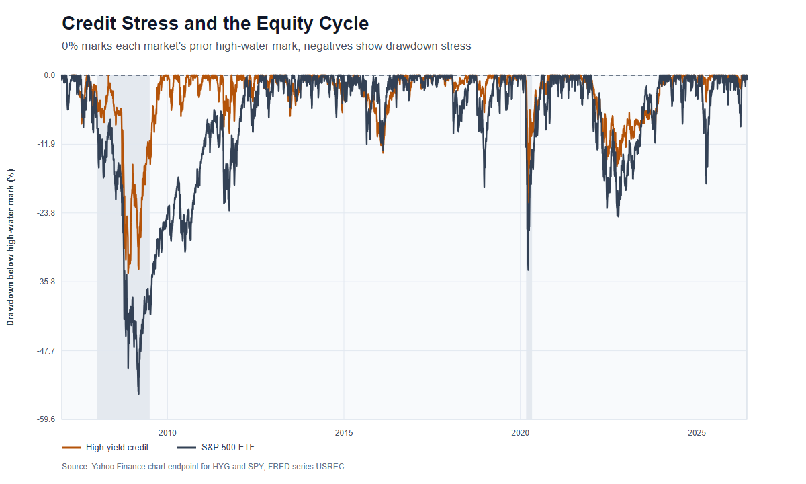
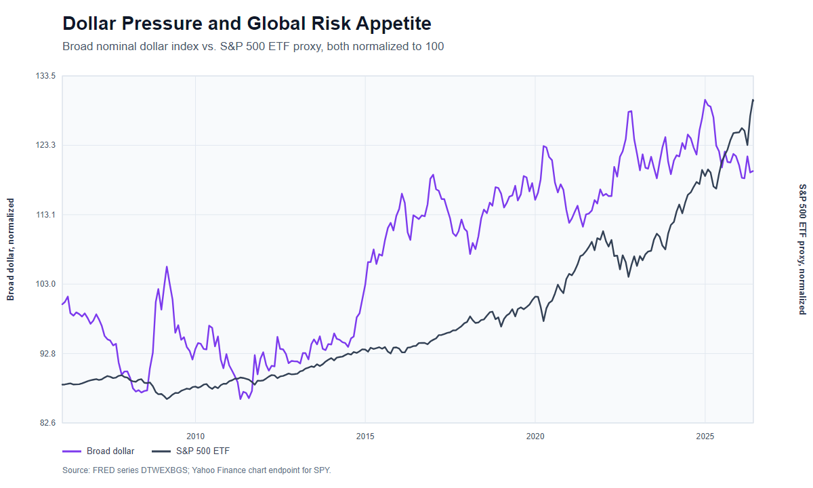
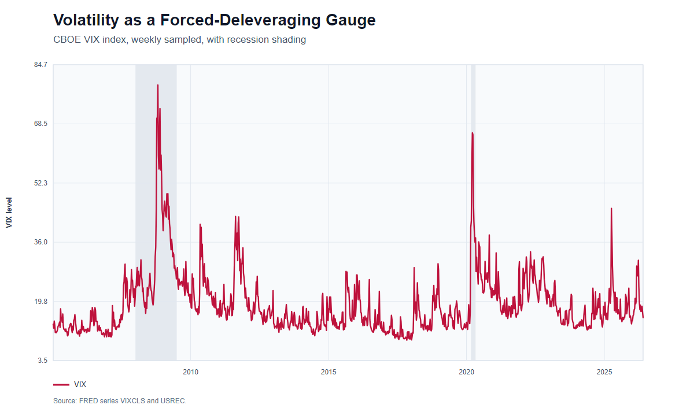
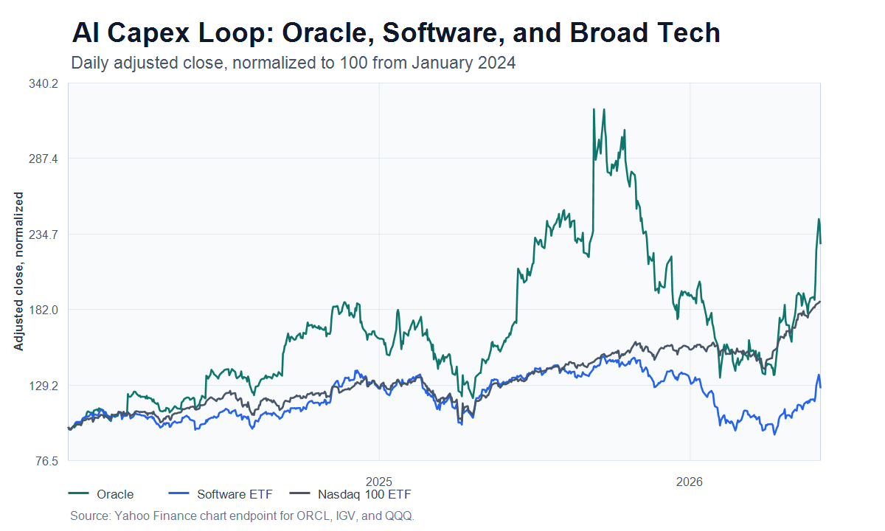
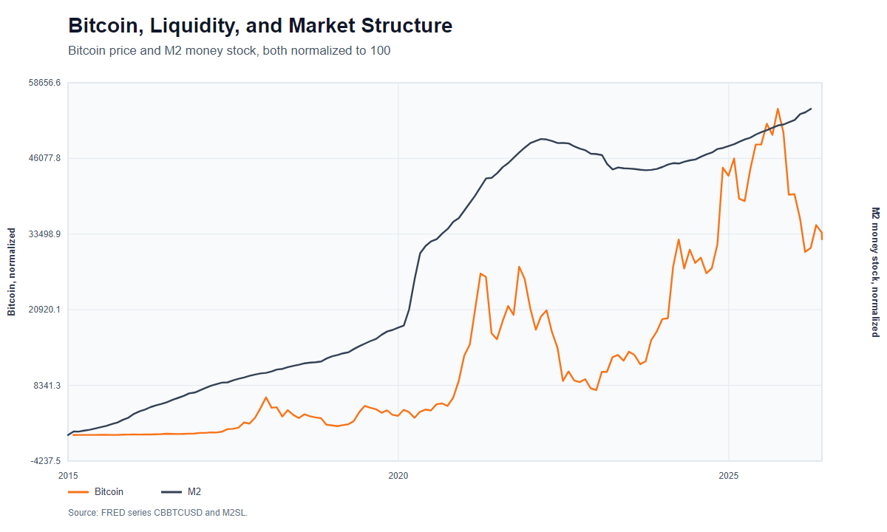

The Macro Regime Operating Manual
An AI-Native Macro Process for Regime, Liquidity, Risk, and Capital Allocation
Updated: 2026-06-05 Primary reference: Capital Flows Research
This edition is an independent AI-assisted study guide for research and education. It is not investment advice, a trading signal, or a recommendation to buy or sell any security. The organization, interpretation, omissions, and errors belong to the publisher of this guide.
This book is a transformed instructional synthesis of public reference material, original organization, independent interpretation, public historical market data, and newly generated charts. It distributes only the finished study guide, not a separate library of reference texts, private research material, or copied publication screenshots. For correction or attribution concerns, contact the person distributing this edition.
Table of Contents
- The Map Is Not the Market
- Markets as Complex Adaptive Systems
- The Preponderance of Evidence
- Regime First, Asset Second
- The Price of Money
- Inflation, Labor, Growth, and the Real Rate Channel
- The Credit Cycle
- Liquidity and the Risk Curve
- The Dollar, FX, and Cross-Border Flows
- Positioning, Volatility, and Microstructure
- Equities, Sectors, and the AI Capex Loop
- Bitcoin, Crypto, and Liquidity Mirrors
- Geopolitics, Tariffs, and Risk Premiums
- Trade Construction and Risk Management
- Building a Macro Research Operating System
- The AI-Native Research Desk
- Case Study: The Credit Cycle Melt-Up
- Case Study: From Panic to Opportunity
- The Practitioner Workbook
- Glossary
Preface: What This Book Is Trying To Do
Most market writing collapses into one of two weak forms. The first is prediction theater: confident statements about where an asset will trade next. The second is data tourism: chart after chart with no hierarchy, no mechanism, and no decision rule. The better question is harder: what process lets a market participant update intelligently when the world changes?
This book synthesizes those recurring ideas into a textbook. The organizing claim is simple: markets are not solved by finding one magic indicator. They are navigated by building an operating system that connects regime, liquidity, positioning, valuation, policy, and risk management into one adaptive loop.
The intellectual path begins with foundational concepts about markets, wealth management, monetary policy, inflation, credit, the dollar, active management, information, and risk. It later develops more explicit frameworks around volatility, FX, rates, positioning, macro catalysts, credit risk, liquidity, Bitcoin, AI, tariffs, geopolitical risk, and the credit cycle melt-up. The later material becomes more systematic: models, dashboards, macro regime trackers, sector flows, interest-rate strategies, crypto market structure, and AI-driven research tools.
A second layer comes from agentic research systems: supervisor agents, generation agents, reflection agents, proximity agents, evolution agents, and ranking agents that use ELO-style tournaments to select better hypotheses. That architecture is not only relevant to biomedical science. It is a blueprint for macro research. A macro process should generate hypotheses, attack them, deduplicate them, evolve them, rank them, test them, and feed results back into the next cycle.
The goal of this textbook is therefore not to preserve the order, voice, or full detail of the reference material. The goal is to turn the ideas into a structured curriculum.
The Textbook Spine
The deepest structure is not chronological. It is procedural.
The 2023 material builds the apprenticeship: how to learn, how to think in probabilities, how to connect countries to data to assets, and how to turn research into risk-controlled action. The 2024 material formalizes the macro triad: growth, inflation, and liquidity, with rates as the hinge. The 2025 and 2026 material turns the process into a live regime tracker: credit cycle, tariffs, AI capex, cross-border flows, positioning, on-chain leverage, and systematic dashboards.
The resulting spine is:
- Country profile: geography, demographics, politics, fiscal capacity, monetary regime, resources, and balance of payments.
- Economic data: growth, inflation, labor, credit, liquidity, and policy reaction.
- Asset attribution: how each market translates macro information into price.
- Positioning and microstructure: who owns what, who must hedge, who must cover, and where liquidity is thin.
- Execution and risk: expression, sizing, invalidation, path, and review.
This is the textbook's operating sequence. It prevents the practitioner from jumping straight from headline to trade.
Innovate, Systematize, Run
The early material repeatedly implies a three-stage research life cycle:
Innovate: discover a new relationship, question, data source, or framework.
Systematize: turn the insight into a repeatable checklist, model, dashboard, or playbook.
Run: execute the process consistently enough to learn from outcomes.
Most people stop at innovation because new ideas feel exciting. Professionals systematize and run. A market edge does not mature until it can survive boredom, stress, and repetition.
The Information Spectrum
The next layer adds an important teaching device: information moves through a spectrum.
Current data describes what has already happened. Forecasts describe what participants expect. Market pricing reveals what is implied. Settlement reality later tells us what was true enough to matter.
The practitioner lives in the gap between implied future and realized future. Catalysts matter because they collapse uncertainty. CPI, payrolls, FOMC, Treasury auctions, earnings, geopolitical events, and policy announcements all force the market to move from possibility toward settlement.
Stacking Edges
The method rejects the idea of one magic signal. Edge is stacked:
- Regime edge
- Data edge
- Positioning edge
- Volatility edge
- Technical edge
- Catalyst edge
- Expression edge
- Behavioral edge
A trade becomes attractive when several edges align and the downside is defined. A thesis becomes dangerous when only one edge exists and conviction is inflated to compensate.
How To Use The Visuals
The textbook now uses three visual types.
First, Mermaid diagrams show process architecture: how ideas, data, markets, and agents connect.
Second, public-data charts give historical anchors. These charts are independently generated from Federal Reserve Economic Data and other public market-data series. They are illustrative figures, not screenshots from the reference publication.
Third, worked examples translate the concept into a practitioner decision sequence.
The visual rule is simple: every figure should answer a research question. Decorative images are excluded.
Figure Index
- Figure 1: Real Rates and Equity Valuation Pressure
- Figure 2: The Yield Curve as a Recession and Policy Signal
- Figure 3: Credit Stress and the Equity Cycle
- Figure 4: Dollar Pressure and Global Risk Appetite
- Figure 5: Volatility as a Forced-Deleveraging Gauge
- Figure 6: Inflation, Policy, and the Reaction Function
- Figure 7: Bitcoin, Liquidity, and Market Structure
- Figure 8: AI Capex Loop, Oracle, and Sector Rotation
Part I: How To Think
1. The Map Is Not the Market
The first lesson is humility. A market is not a spreadsheet, a chart, a model, or a news feed. Those are maps. The market is the live interaction of balance sheets, incentives, policy constraints, positioning, emotions, dealer flows, economic data, and time.
A model becomes dangerous when the practitioner forgets that it is a compression of reality. The purpose of a model is not to remove uncertainty. The purpose of a model is to make uncertainty legible enough that decisions can be compared, sized, and updated.
This distinction appears again and again: the trader's job is not to know the future. The trader's job is to build a probabilistic process that can survive being wrong.
The Practitioner Shift
Most beginners ask:
- What will happen?
- Which asset should I buy?
- Which chart is bullish or bearish?
The professional asks:
- What regime are we in?
- What is already priced?
- What is the market sensitive to?
- Where is positioning crowded?
- What data would falsify my view?
- How large should the bet be if I am wrong?
- What expression gives the best asymmetry?
This shift is everything. It moves the conversation from prediction to process.
The Four Layers of Market Thought
A useful market map has four layers.
- Mechanism: why should this relationship exist?
- Regime: when does the mechanism matter most?
- Positioning: who is already exposed to the mechanism?
- Expression: how should the view be traded or avoided?
If a thesis lacks mechanism, it is a story. If it lacks regime, it is too general. If it lacks positioning, it ignores flows. If it lacks expression, it is not yet a decision.
Worked Example: Lower Rates Are Not Always Bullish
The naive claim is "lower rates are bullish for equities." The framework asks why rates are falling.
If rates fall because inflation expectations fall while growth remains stable, discount rates decline and equities may benefit. If rates fall because growth is collapsing and credit risk is rising, lower rates may be bearish because earnings and balance sheets are deteriorating faster than discount rates are helping.
The same market fact becomes two different trades once mechanism and regime are specified.
Exercise
Take any market claim, such as "lower rates are bullish for equities." Rewrite it through the four layers. Ask what kind of rate decline it is, why rates are falling, whether growth is collapsing, whether inflation expectations are changing, whether positioning is crowded, and which equity sectors should benefit or suffer.
2. Markets as Complex Adaptive Systems
A complex adaptive system is made of agents who learn, respond, imitate, panic, and adapt. Markets are exactly that. They are not static equations. They are feedback machines.
When prices rise, they can attract buyers because trend followers enter, vol-control strategies increase exposure, retail attention rises, and short sellers are forced to cover. When prices fall, the same feedback can reverse. This is why price is not merely an output. Price becomes an input into future flows.
This idea can be seen through many lenses: reflexivity, positioning unwinds, gamma squeezes, volatility compression, liquidity, risk-on and risk-off behavior, and the speed of returns. The AI-related pieces extend the same logic into technology cycles. AI capex creates cash flows for infrastructure companies, which changes equity leadership, which changes index concentration, which changes passive flows, which changes the macro sensitivity of the whole market.
Reflexivity
Reflexivity means beliefs and prices interact. If investors believe AI capex will transform earnings, they bid up AI-linked assets. Higher equity values lower financing costs and increase the ability of firms to spend. Spending validates the original belief for a time. The belief changes reality.
But reflexivity can reverse. If the capex cycle disappoints, the same feedback loop works backward. The thesis is not "AI is good" or "AI is bad." The thesis is that the market becomes vulnerable when a reflexive loop becomes consensus and leverage builds around it.
Time Horizon Is a Variable
The same fact can be bullish at one horizon and bearish at another. A credit boom can lift equities today and increase fragility tomorrow. Falling real rates can stimulate risk assets today and create inflation or currency risk later. Tariffs can create a short-term risk-off shock and a longer-term supply-chain regime shift.
The textbook method is to separate:
- Immediate impulse
- Medium-term transmission
- Long-term consequence
Confusion comes from collapsing those horizons into one opinion.
Exercise
Choose a current market narrative. Write three versions of it: a one-week version, a three-month version, and a three-year version. Identify where the same event changes sign across horizons.
3. The Preponderance of Evidence
A recurring phrase is the preponderance of evidence. It is the antidote to single-indicator thinking.
A market thesis becomes stronger when independent forms of evidence point in the same direction. It becomes weaker when the only support is one chart, one data point, or one narrative. The goal is not certainty. The goal is a weighted stack of evidence.
The Evidence Stack
A robust macro view usually combines:
- Policy stance: what central banks and fiscal authorities are doing
- Growth: whether activity is accelerating or deteriorating
- Inflation: whether nominal pressure is rising or falling
- Real rates: whether financing is restrictive or stimulative after inflation
- Credit: whether lending and issuance are expanding or contracting
- Liquidity: whether money and collateral conditions support risk
- FX: whether cross-border flows are helping or hurting
- Positioning: whether the view is crowded or under-owned
- Volatility: whether options markets are suppressing or amplifying movement
- Technical structure: where invalidation and reflexive flows may occur
The more independent layers agree, the higher the conviction. When layers conflict, the correct response is not forced confidence. It is smaller size, better optionality, or patience.
Falsification
Every thesis needs an invalidation condition. "I am bullish equities" is incomplete. Better: "I am bullish equities while real rates are falling, credit issuance is open, breadth is improving, and long-end rates are not breaking the equity pain threshold. If core inflation reaccelerates and forces the Fed to tighten, the thesis changes."
This structure turns opinion into a living hypothesis.
Exercise
For any active market view, create a two-column table. Left column: evidence supporting the view. Right column: evidence that would falsify it. If the right column is empty, you do not have a thesis. You have attachment.
Part II: The Macro Engine
4. Regime First, Asset Second
Assets do not have fixed personalities. Bonds can be safe havens in one regime and sources of loss in another. Bitcoin can trade like a liquidity asset, a speculative technology asset, or a macro hedge depending on the cycle. Equities can rise on lower rates if growth is stable, or fall on lower rates if the rate decline signals recession.
The core lesson is regime alignment. The practitioner should ask: what macro state makes this asset's payoff attractive?
A Basic Regime Grid
A simple regime grid starts with growth and inflation.
- Growth up, inflation down: disinflationary expansion
- Growth up, inflation up: reflation or overheating
- Growth down, inflation down: recessionary disinflation
- Growth down, inflation up: stagflation
This grid is not enough by itself, but it organizes first-order asset behavior.
In disinflationary expansion, equities and credit often benefit. In reflation, commodities, cyclicals, and inflation-linked assets may perform. In recessionary disinflation, duration can work if inflation is contained and central banks can cut. In stagflation, policy trade-offs become harder and correlations can break.
Regime Is Dynamic
Regimes are not labels to memorize. They are transitions to monitor. Inflection points matter more than static descriptions. The market moves when participants are forced to update.
Regime change often shows up first in:
- Yield curves
- Credit spreads
- FX moves
- Sector leadership
- Volatility surfaces
- Breadth and dispersion
- Correlation changes
The goal is to notice when the market's sensitivity changes. The same CPI print can matter enormously in one regime and barely matter in another. Data matters through the reaction function.
Exercise
Build a weekly regime dashboard. Include growth surprise, inflation surprise, real rates, credit spreads, dollar trend, equity breadth, sector leadership, and volatility. Write one sentence: "The market is currently paying most attention to ____."
5. The Price of Money
Interest rates are the price of money across time. They shape discount rates, credit creation, currency values, housing affordability, equity multiples, bank balance sheets, and risk appetite.
The rate work spans bonds, yield curves, real rates, rate cuts, r-star, SOFR, bond futures spreads, and the transmission from rates into equities. The recurring idea is that rates are not just another asset class. Rates are the skeleton of the financial system.

Nominal Rates and Real Rates
A nominal rate is the stated interest rate. A real rate adjusts for inflation expectations. If nominal rates are high but inflation expectations are also high, real financing conditions may be less restrictive than the nominal number suggests. If nominal rates are stable while inflation expectations rise, real rates fall. That can be a liquidity impulse even without a central-bank cut.
This is central to the melt-up framework. It depends heavily on real rates approaching or crossing into negative territory. The point is not simply that "cuts are bullish." The sharper point is that the gap between nominal rates and inflation expectations can ease financial conditions before policy officially moves.
The Yield Curve
The curve expresses the price of money across maturities. A front-end move can reflect central-bank expectations. A long-end move can reflect growth, inflation risk, supply, term premium, and global capital flows. Curve shape matters because it tells us where the market thinks pressure will appear.
Curve thinking helps analyze recession risk, credit risk, policy timing, and trade construction. A steepening curve is not automatically bullish or bearish. A bull steepener driven by expected cuts into recession is different from a bear steepener driven by inflation risk and fiscal supply.

The Rate Complex
There is no single interest rate. Fed funds and SOFR price the policy path. The 2-year sits close to expected central-bank action. The 5-year is the hinge between policy and term premium. The 10-year and 30-year transmit duration, mortgage, pension, fiscal-supply, and global-capital-flow pressure. A serious rate view reads them as one system.
The clean signal is not merely whether rates rise or fall. It is whether equities, credit, housing, REITs, financials, industrials, and small caps absorb the rate move. If long-end rates rise and the rate-sensitive parts of the market do not break, the market is telling you growth and liquidity are stronger than the rate shock.
Worked Example: 2022 Was a Price-of-Money Shock
The 2022 regime was not simply "stocks went down." Inflation forced nominal rates and real rates higher. Higher real rates compressed long-duration equity multiples, lifted cash yields, pressured housing affordability, and changed the relative attractiveness of speculative assets. The same mechanism hit bonds through duration and equities through valuation.
That is why rate analysis belongs before asset selection. If the price of money is being repriced upward, the whole risk stack has to be re-underwritten.
Exercise
When rates move, do not write "rates up" or "rates down." Write which maturity moved, why it moved, whether real rates changed, whether inflation expectations changed, and which assets should be most sensitive.
6. Inflation, Labor, Growth, and the Real Rate Channel
Inflation, labor, and growth form the core policy triangle. Central banks respond to this triangle, and markets respond to central banks responding to it.
Economic data should not be read in isolation. A strong labor report means something different when inflation is falling than when inflation is accelerating. Weak growth means something different when policy has room to ease than when inflation prevents easing.

Inflation
Inflation is not one thing. It can be demand-driven, supply-driven, commodity-driven, wage-driven, shelter-driven, or expectations-driven. Policy has different leverage over each component.
A supply-side inflation shock can create a dilemma. If central banks hike aggressively into a supply shock, they may crush demand unnecessarily. If they ignore it, inflation expectations may rise. The market must price the policy reaction, not just the inflation print.
Labor
Labor markets affect income, consumption, services inflation, and political pressure. But labor data is often lagging. The practitioner must distinguish between labor as a current condition and labor as a forward signal.
Growth
Growth matters because it determines whether higher rates are restrictive or absorbable. The AI capex and credit-expansion thesis argues that the US economy can withstand higher rates longer than many expect. That is a regime-specific claim: higher rates are dangerous when cash flows cannot absorb them; they are less dangerous when nominal growth, capex, and credit creation remain strong.
The Real Rate Channel
The real rate channel connects the triangle. If inflation expectations rise while nominal rates do not, real rates fall. Lower real rates stimulate risk-taking, credit creation, housing, equities, and speculative assets. If nominal rates rise faster than inflation expectations, real rates rise and pressure the risk curve.
Exercise
After each major CPI, payrolls, or GDP release, write three lines:
- What changed in the data?
- What changed in the expected policy reaction?
- What changed in real rates and risk appetite?
7. The Credit Cycle
The credit cycle is the expansion and contraction of borrowing capacity. It is one of the master cycles behind asset prices.
When credit expands, capital moves out the risk curve. Companies refinance, investors buy spread product, leverage rises, speculative projects receive funding, and equities can melt up. When credit contracts, refinancing becomes harder, spreads widen, defaults rise, and assets that depended on easy financing reprice.
The credit cycle melt-up thesis builds on a simple argument: credit issuance, real-rate dynamics, AI capex, and risk-curve behavior can create a powerful upward impulse before the eventual fragility becomes visible.

Credit Leads, Confirms, and Warns
Credit can play three roles.
It leads when credit markets tighten before equities understand the problem.
It confirms when strong issuance and tight spreads validate risk appetite.
It warns when low-quality credit or leveraged assets diverge from headline indexes.
The practitioner should not treat equities as the whole market. Equities can be late to credit stress, and they can also be late to credit thaw.
The Three Endings
Cycle risk can be framed through possible endings:
- Recession: cash flows deteriorate and defaults rise.
- Inflation or rate shock: long-end rates rise enough to break the equity and credit bid.
- Cross-border reversal: dollar, FX, and capital-flow stress force deleveraging.
This is a useful structure because it prevents vague bearishness. A cycle does not end because people are uncomfortable with high prices. It ends when a transmission channel breaks.
Historical Example: 2008, 2020, and the Credit Signal
Credit spreads widened sharply in 2008 because the stress was inside the financial system's balance sheet. Equities eventually reflected that stress, but credit carried the cleaner warning.
In 2020, spreads also exploded, but the policy response reopened financing quickly. The lesson is not that wide spreads are always bearish. The lesson is that credit stress must be read with the policy response and the refinancing window. If credit is closed and policy cannot or will not reopen it, the cycle is in danger. If credit reopens quickly, risk assets can recover violently.
Exercise
Track high-yield spreads, issuance, refinancing conditions, bank lending, delinquency data, and low-quality equity performance. Ask whether credit is validating or contradicting the equity narrative.
8. Liquidity and the Risk Curve
Liquidity is one of the most overused words in markets. Here it means more than central-bank balance sheets. It includes real rates, credit availability, collateral, dollar funding, volatility, dealer balance sheets, fiscal flows, and the willingness of investors to move out the risk curve.
The Risk Curve
The risk curve is the hierarchy from safe, liquid assets toward speculative, illiquid, and leveraged assets. When liquidity expands, capital often migrates outward:
- Cash to bills
- Bills to duration
- Duration to credit
- Credit to equities
- Equities to cyclicals and small caps
- Small caps to crypto and speculative themes
- Themes to levered expressions
The exact path depends on regime, but the concept is stable: liquidity changes the marginal buyer's willingness to accept risk.
Liquidity Is Not Always Visible First in the Same Asset
Sometimes liquidity appears first in Bitcoin. Sometimes in credit. Sometimes in small caps. Sometimes in call skew. Sometimes in the weakest balance sheets. The market's most sensitive asset changes across regimes.
This is why the process uses a cross-asset lens. The practitioner is not looking for one perfect liquidity proxy. The practitioner is looking for agreement across assets that sit at different points on the risk curve.
Worked Example: Liquidity Without a Rate Cut
If nominal rates stay flat but inflation expectations rise, real rates fall. That can ease financial conditions even before the central bank cuts. Credit investors may become more willing to buy issuance, equity investors may pay higher multiples, and speculative assets may catch a bid.
The mistake is waiting for the official cut as the only liquidity signal. The market often reprices the liquidity impulse before the policy action appears in the headline rate.
Exercise
Create a risk-curve heatmap. Include cash yields, real rates, credit spreads, high-yield issuance, equity breadth, small-cap relative performance, crypto performance, and volatility. Identify whether capital is moving inward or outward.
9. The Dollar, FX, and Cross-Border Flows
FX is the balance sheet of the world speaking in relative prices. Currencies reflect growth differentials, rate differentials, current accounts, capital flows, terms of trade, policy credibility, and risk appetite.
The FX framework spends significant time on the dollar, yen, AUDJPY, GBP, surplus and deficit countries, and cross-border flows. The recurring lesson is that FX cannot be reduced to one variable. It is a relative macro instrument.

Surplus and Deficit Countries
Surplus countries export savings. Deficit countries import capital. This matters because global capital has to settle somewhere. When the US absorbs global savings, the dollar, Treasury market, equity market, and credit system become part of one flow machine.
The rebalancing problem matters because tariffs, dollar devaluation, supply-chain shifts, and geopolitical fragmentation all change how surplus and deficit countries interact.
The Dollar
The dollar is not just a currency. It is the funding currency, reserve asset, collateral system, and global risk barometer. Dollar strength can tighten global conditions, especially for dollar debtors. Dollar weakness can support global liquidity and risk appetite, but if disorderly, it can become a confidence problem.
The Yen
The yen appears as a pressure point because Japan sits at the intersection of low domestic rates, global carry trades, central-bank control, and currency devaluation risk. Yen moves can affect global liquidity because they influence carry, hedging, and repatriation.
Worked Example: Dollar Strength as Global Tightening
When the dollar rises rapidly, global borrowers with dollar liabilities face tighter conditions. Importers in weaker-currency countries may face higher costs. Commodity and emerging-market assets can come under pressure. US investors may see foreign earnings translated back at less favorable rates.
Dollar strength is therefore not just an FX view. It can be a global liquidity view.
Exercise
For any currency view, write the relative comparison. Do not say "bullish dollar." Say "bullish dollar against which currency, because which growth differential, rate differential, capital-flow pressure, or risk regime?"
Part III: Market Transmission
10. Positioning, Volatility, and Microstructure
Macro explains why pressure exists. Microstructure explains how pressure becomes price.
Positioning, gamma, options, intraday liquidity, volatility compression, skew, dealer flows, and the speed of returns are not decorative topics. They are the mechanisms that determine whether a macro view bleeds slowly, grinds higher, or gaps violently.

Positioning
Positioning asks who owns what, how much leverage they have, and what would force them to change. A bullish macro view can fail tactically if everyone already owns the asset. A bearish view can fail if the short base is crowded and the catalyst triggers covering.
The key is to separate cause from symptom. A short squeeze can explain the speed of a move, but it may not explain the underlying regime shift. In the credit-cycle melt-up discussion, short covering may amplify the move, while falling real rates, credit issuance, and risk-curve flows explain why the bid exists.
Volatility
Volatility is both price and constraint. When realized volatility falls, strategies that target volatility may increase exposure. When implied volatility falls, hedging becomes cheaper and carry trades may expand. When volatility spikes, forced deleveraging can overwhelm fundamentals.
Gamma and Dealer Effects
Options positioning can create pinning, acceleration, and nonlinear moves. A market near large option strikes may behave differently than a market with little open interest. Gamma can suppress realized volatility until it does not.
Mania, Gamma, and Inelastic Markets
The newest market-structure layer is the convergence of mania behavior with highly inelastic trading mechanics. Passive flows, 0DTE options, leveraged products, social attention, prediction markets, and concentrated positioning can compress risk into a single moment. When that moment arrives, price can move less like a valuation update and more like a mechanical unwind.
The PURR gamma-squeeze case is useful because it joins several layers at once: a credit-cycle liquidity impulse, a concentrated thesis, changing microstructure, on-chain market structure, momentum, and the possibility that option or leverage dynamics force a nonlinear repricing. Whether the trade succeeds or fails is not the textbook point. The point is that modern markets can create reflexive squeezes when liquidity, attention, positioning, and structure all point in the same direction.
Worked Example: Volatility Compression Before a Break
Low implied volatility is often interpreted as complacency. Sometimes it is. But it can also be a mechanical condition that encourages leverage, carry, and systematic exposure. The danger is that the system becomes fragile precisely because realized volatility has been low.
The practical question is not "is VIX low?" It is "what positions exist because volatility has been low, and what would force them to unwind?"
Exercise
Before entering a trade, answer:
- Is positioning crowded or under-owned?
- Is volatility cheap or expensive?
- What level forces hedgers or shorts to act?
- Is the trade likely to grind, gap, or mean-revert?
11. Equities, Sectors, and the AI Capex Loop
The equity market is not one thing. It is a collection of sectors, factors, balance sheets, durations, and narratives. The equity framework moves from broad index analysis toward sector and stock-level information flow, especially around AI, software, semiconductors, data centers, Oracle, Mag 7, and small caps.
Index Concentration
When a few mega-cap companies dominate index weight, the index becomes sensitive to their earnings, capex plans, and multiple expansion. Passive flows can reinforce concentration. But concentration also hides dispersion underneath.
AI Capex as Macro
AI capex is not only a technology story. It is a macro flow story. Large firms spend on chips, data centers, power, networking, real estate, cloud infrastructure, and software. That spending becomes revenue for other firms. It supports credit issuance, capex cycles, and regional investment. It changes sector leadership.
The AI capex thesis can help explain why the US economy withstands higher rates: capex and cash-flow generation create a bid that offsets some monetary restriction. This is a testable thesis, not a permanent law. It depends on capex continuing, financing staying open, and earnings expectations being validated.

The chart is not a proprietary attribution model. It is a public-data illustration of the question a macro equity process should ask: when one stock diverges from its sector and broad technology beta, which driver is responsible? The answer may be fundamentals, sector flow, market beta, balance-sheet news, positioning, or a reflexive AI-capex narrative. The job is to decompose the move instead of naming the theme and stopping there.
Worked Example: Single-Stock Macro Attribution
A stock like Oracle can be analyzed as more than a company-specific story. The practitioner can decompose the move into market beta, sector beta, AI infrastructure flow, data-center financing, credit conditions, and idiosyncratic execution.
This is the difference between "the stock is up because AI" and a usable attribution map. The second version tells you what data to monitor and what would falsify the trade.
AI Deception and Tail Compression
AI also changes the attention environment. The stronger the narrative, the easier it becomes for investors to confuse psychological conviction with evidence. A market can normalize gambling, passive concentration, prediction-market volume, and extreme valuations because the dominant story gives every risk a convenient explanation.
This creates tail compression. Risks build in equities, rates, FX, and market structure while participants feel informed because they are constantly monitoring the situation. The closer they look, the less they may see. The textbook discipline is to separate narrative charisma from transmission: capex, cash flows, credit issuance, margins, financing costs, positioning, and valuation.
Sector Rotation
Sector rotation is the market repricing which cash flows matter. Semiconductors may lead in one phase, software in another, utilities or power in another, small caps in another. Rotation can reveal whether a move is broadening or narrowing.
Exercise
For an equity thesis, map the flow chain. Who spends? Who receives the revenue? Who finances it? Which sector benefits first? Which sector benefits second? Which crowded pair trade must unwind if the thesis is right?
12. Bitcoin, Crypto, and Liquidity Mirrors
Bitcoin and crypto should not be treated as isolated assets. They can be expressions of liquidity, macro trust, market structure, and risk appetite.

Bitcoin can behave like:
- A liquidity-sensitive risk asset
- A hedge against currency debasement narratives
- A speculative technology asset
- A market-structure story driven by ETFs, flows, leverage, and positioning
The correct interpretation changes by regime.
Liquidity Mirror
Speculative crypto assets can act as liquidity mirrors. When capital moves aggressively out the risk curve, it often reaches cultural, reflexive, and highly liquid speculative assets. Memecoins, in this frame, are not serious claims on cash flow. They are thermometers for speculative liquidity and attention.
Market Structure
ETF flows, leverage, exchange liquidity, stablecoins, and derivatives matter. A bullish macro view can be interrupted by poor market structure. A weak macro backdrop can be offset temporarily by structural inflows.
On-Chain Leverage and Funding Rates
Hyperliquid adds a more explicit market-structure lens: funding rates can reveal the supply and demand of leverage across assets. When on-chain venues list equity indices, commodities, crypto, and single-name exposures, they become laboratories for cross-asset leverage. The funding-rate surface shows where traders are paying to be long, where shorts are crowded, and where arbitrage capital has not yet arrived.
This matters because data costs and access are part of market structure. If a venue makes funding, leverage, and positioning easier to observe, it changes who can compete. Open data can compress traditional information rents while creating new forms of reflexive speculation.
The Trader's Trilemma
The trader's trilemma is edge, frequency, and risk capacity. You can usually optimize two, not all three. High edge plus high frequency often destroys risk capacity. High frequency plus low risk usually thins the edge. High edge plus protected risk capacity usually means lower frequency and more patience.
This is why market structure should be tied back to personality. A sniper, a machine, and a gambler can look at the same liquidity regime and require different rules.
Worked Example: Bitcoin as Two Trades at Once
Bitcoin can rise because macro liquidity is improving, because ETF inflows are strong, because dollar confidence is weakening, or because leveraged positioning is expanding. Those are different trades with different invalidations.
If Bitcoin rises while liquidity proxies, ETF flows, and risk assets confirm, the move is broad. If Bitcoin rises only on leverage while liquidity tightens, the move is more fragile.
Exercise
When analyzing Bitcoin, separate the thesis into macro liquidity, dollar confidence, market structure, positioning, and adoption. Then ask which component is currently dominant.
13. Geopolitics, Tariffs, and Risk Premiums
Geopolitics matters through pricing, policy, supply chains, currency flows, and risk premiums. But markets often over-extrapolate geopolitical events. A shock can produce a risk premium that later fades if the worst-case path does not materialize.
Tariff and geopolitical-risk analysis depends on this distinction. The question is not simply "is the event bad?" The question is:
- What was priced before the event?
- Which assets carry the risk premium?
- What policy response follows?
- Does the event alter cash flows or only sentiment?
- Does it change inflation, growth, or cross-border flows?
Tariffs
Tariffs can be inflationary, growth-negative, supply-chain-altering, and politically reflexive. But their market impact depends on scale, retaliation, currency offsets, corporate margins, and central-bank reaction functions.
Economic Warfare
Modern geopolitical conflict often shows up as economic pressure before it shows up as military pressure. Tariffs, currency management, export controls, data controls, capital restrictions, commodity access, and supply-chain policy can all become weapons. The market must ask whether a geopolitical event changes the flow of goods, the flow of capital, the flow of data, or the credibility of reserve assets.
China risk is therefore not only an equity headline. It can transmit through FX, semiconductors, industrial supply chains, commodity demand, cross-border investment, and the political tolerance for dollar devaluation or protectionism.
Risk Premium Fade
If a risk event is priced aggressively and then does not escalate, markets can rally as the premium fades. This does not mean the event was fake. It means price incorporated too much of one path.
Exercise
For any geopolitical event, create three scenarios: escalation, containment, and reversal. Assign likely impacts to inflation, growth, FX, rates, equities, and commodities. Then identify what the market is already pricing.
Part IV: Decisions
14. Trade Construction and Risk Management
A thesis is not a trade. A trade is a specific expression with entry, sizing, invalidation, time horizon, and opportunity cost.
Trade updates, playbooks, and risk-management notes all emphasize that process matters more than heroic conviction. The best traders are not those who never lose. They are those who lose in planned ways.
Expression
The same macro view can be expressed through:
- Cash equities
- Sector baskets
- Index futures
- Bonds
- Curve spreads
- FX pairs
- Options
- Credit
- Crypto
- Pair trades
The right expression depends on the mechanism. If the view is about real rates, a rate or duration expression may be cleaner than equities. If the view is about sector rotation, a pair trade may isolate it better than a broad index. If the view is about convexity around a catalyst, options may be appropriate.
Sizing
Sizing should reflect uncertainty, volatility, liquidity, and invalidation distance. A high-conviction thesis with a wide stop may deserve less size than a moderate thesis with tight invalidation and strong asymmetry.
Inaction
Inaction is a valid decision. Not trading is not laziness if the evidence stack is mixed, the expression is poor, or the market is between levels. Patience is an active allocation of attention.
Exercise
Before any trade, write:
- Thesis
- Regime
- Evidence stack
- Expression
- Entry
- Invalidation
- Size
- Catalyst
- Expected path
- What would make me add, reduce, or exit?
15. Building a Macro Research Operating System
The mature form of this work is not a collection of opinions. It is an operating system.
An operating system has inputs, processing rules, outputs, and feedback. For macro, the inputs are data, prices, policy, positioning, narratives, and flows. The processing rules are regime classification, evidence weighting, scenario analysis, and risk construction. The outputs are playbooks, trade expressions, watchlists, and invalidation levels. Feedback comes from realized price action and new data.
The Macro Regime Tracker
The operating system eventually becomes something close to a daily regime tracker. Its categories are not random. They are the minimum set needed to prevent reductionism:
- Growth
- Inflation
- Liquidity
- Credit
- Fixed income
- Equities
- FX
- Crypto
- Commodities
- Positioning
- Volatility
- Catalysts
Each category asks two questions. First: what is the current state? Second: what is the direction of change? Markets usually care more about the second question. A bad variable that is improving can be bullish. A good variable that is deteriorating can be bearish.
Driver Decomposition
Every major asset move should be decomposed into drivers. For equities, this can include earnings expectations, discount rates, equity risk premium, positioning premium, sector flow, and liquidity. For bonds, it can include expected policy, inflation compensation, term premium, fiscal supply, and foreign demand. For Bitcoin, it can include macro liquidity, ETF flows, leverage, dollar confidence, and proxy exposure.
Driver decomposition is what keeps the analyst from saying "the market went up because buyers bought." The question is which buyer, responding to which driver, through which instrument, under which regime.
The Weekly Loop
A practical weekly process:
- Update the regime dashboard.
- Identify the market's dominant sensitivity.
- Review cross-asset confirmation and divergence.
- Map upcoming catalysts.
- Re-rank active theses.
- Translate top theses into expressions.
- Define invalidation.
- Review trades and errors.
Add one line at the end: "What would change my mind this week?" This keeps the process falsifiable.
The Daily Loop
A practical daily process:
- Check overnight rates, FX, commodities, credit, and equity futures.
- Identify which asset is leading.
- Compare price action to the weekly thesis.
- Watch intraday liquidity and volatility.
- Avoid changing the big thesis because of small noise.
- Update only when evidence changes.
The Error Log
Every process needs an error log. Track:
- Thesis errors
- Timing errors
- Sizing errors
- Expression errors
- Emotional errors
- Information errors
The goal is not self-punishment. The goal is compounding process quality.
The Research Rhythm
The implied rhythm is:
- Primer: learn the variable.
- Dashboard: track the variable.
- Case study: see the variable in a live market.
- Trade plan: express the variable with defined risk.
- Retrospective: compare thesis to outcome.
This rhythm is why the material feels like apprenticeship rather than textbook theory. The concept is never finished until it meets price.
16. The AI-Native Research Desk
Agentic research systems can behave like virtual laboratories. The architecture maps directly onto macro research.
The Agent Stack
Supervisor agent: defines the research objective and assigns tasks.
Generation agent: proposes hypotheses from research notes, current data, and historical analogs.
Reflection agent: attacks each hypothesis for weak mechanism, bad data, overfitting, or missing falsification.
Proximity agent: clusters similar hypotheses so the desk does not waste time repeating the same idea in different words.
Evolution agent: combines and refines surviving hypotheses.
Ranking agent: runs head-to-head comparisons and scores hypotheses on plausibility, novelty, evidence, impact, tradability, and falsifiability.
Validation agent: checks whether the thesis survives real data, price action, and out-of-sample evidence.
The ELO Tournament for Macro Ideas
The ELO-style idea tournament is a powerful metaphor. Macro theses should compete. "Credit-cycle melt-up" should face "recessionary contraction." "Dollar devaluation" should face "dollar squeeze." "AI capex supports growth" should face "AI capex creates concentration risk."
Each thesis argues its mechanism. Each attacks the other's weak points. A judge scores which thesis better explains the evidence stack. Over repeated rounds, the best thesis rises. But unlike a debate club, the market later grades the result.
The AI-Native Research Stack
This is the practical version of the idea stack: do not let the model reason from memory alone. A serious research desk needs live access to notes, charts, data, prior theses, market history, browser context, and specialized agents. The point is not novelty. The point is to make the research loop inspectable, repeatable, and hostile to lazy conviction.
The operating pattern is simple:
- Maintain a reference trail.
- Verify claims against data and price.
- Generate competing theses.
- Attack each thesis before the market does.
- Cluster duplicates so vocabulary does not masquerade as insight.
- Rank the remaining ideas by explanatory power, timing, liquidity, and risk.
- Convert the winner into a trade checklist.
The mature version would add:
- Market data connectors
- Chart-generation and figure-validation pipelines
- Search over notes, charts, data, and prior theses
- A thesis database
- Automated contradiction detection
- Backtest and event-study modules
- A dashboard that tracks active regime hypotheses
Exercise
Build a "macro co-scientist" prompt stack. Give one agent the job of generating theses, one the job of attacking them, one the job of clustering duplicates, one the job of ranking them, and one the job of converting the winner into a trade checklist.
Part V: Integrated Case Studies
17. Case Study: The Credit Cycle Melt-Up
The credit cycle melt-up thesis integrates the whole textbook.
Mechanism
Real rates fall as inflation expectations remain firm and nominal policy does not tighten further. Credit issuance remains open. AI capex supports growth and corporate cash flows. Capital moves out the risk curve. Positioning is not prepared for the persistence of the move. Under-owned or shorted assets squeeze higher.
Evidence Stack
The thesis looks for:
- Falling real rates
- High-yield issuance
- Tight or improving credit spreads
- Stable growth data
- Contained core inflation
- Sector broadening
- Small-cap improvement
- Software or AI-linked rotation
- Volatility compression
- Short-interest pressure
Invalidation
The thesis weakens if:
- Core inflation reaccelerates enough to force hikes
- Long-end rates rise disorderly
- Credit issuance closes
- Spreads widen sharply
- AI capex disappoints
- Cross-border flows reverse
- Labor data deteriorates into recession
Trade Expressions
Possible expressions include broad equity exposure, small caps, sector rotation, software versus semis, rate spreads, credit-sensitive equities, or options around catalysts. The correct expression depends on which part of the mechanism is most mispriced.
Lesson
The melt-up thesis is not "stocks go up." It is a claim about the interaction of real rates, credit, capex, positioning, and flows. That is why it is textbook-worthy.
18. Case Study: From Panic to Opportunity
The same process applies to moments of panic: banking stress, tariff shocks, geopolitical events, volatility spikes, equity selloffs, and recession scares.
The process is consistent.
First, separate shock from transmission. What happened? Which balance sheets are affected? Which prices moved?
Second, ask what was already priced. A bad event can be bullish if the market priced worse.
Third, identify the forced flow. Who must sell? Who must hedge? Who must cover?
Fourth, check policy response. Does the shock produce easing, liquidity, fiscal support, or a central-bank pivot?
Fifth, define the opportunity. Is this a fade, a hedge, a new regime, or a no-trade?
Panic Checklist
- Is the event solvable or structural?
- Is it inflationary, deflationary, or both across horizons?
- Does it affect credit creation?
- Does it alter cross-border flows?
- Are real rates rising or falling?
- Is volatility causing forced selling?
- Is the market moving from information or positioning?
- What data would prove the panic is becoming systemic?
Lesson
Panic is not automatically opportunity. Panic is opportunity only when price overshoots the likely transmission and the evidence stack shows stabilization.
Part VI: Workbook
19. The Practitioner Workbook
Country-to-Trade Map
Country or region:
Political regime:
Fiscal stance:
Monetary stance:
Growth trend:
Inflation trend:
External balance:
Currency pressure:
Key local asset markets:
Global transmission channel:
Best market expression:
Main invalidation:
Information Spectrum Map
Current data:
Consensus forecast:
Market-implied future:
Relevant catalyst:
Settlement reality after catalyst:
Who was forced to update:
Price response:
Lesson:
Weekly Regime Template
Date:
Dominant market sensitivity:
Growth trend:
Inflation trend:
Real-rate trend:
Credit trend:
Dollar trend:
Volatility trend:
Equity breadth:
Sector leadership:
Positioning risks:
Top three catalysts:
Base case:
Bull case:
Bear case:
Invalidation:
Best expression:
Thesis Tournament Template
Thesis A:
Mechanism:
Evidence:
Weakness:
Invalidation:
Best expression:
Thesis B:
Mechanism:
Evidence:
Weakness:
Invalidation:
Best expression:
Winner:
Why:
What would change the ranking:
Trade Review Template
Trade:
Original thesis:
Actual outcome:
Was the thesis right?
Was the expression right?
Was the sizing right?
Was the timing right?
What did the market teach?
What rule should change?
Stacked Edge Scorecard
Regime edge:
Data edge:
Positioning edge:
Volatility edge:
Technical edge:
Catalyst edge:
Expression edge:
Behavioral edge:
Total thesis quality:
Reason not to trade:
20. Glossary
Alpha: return not explained by broad market exposure or common risk factors.
Asymmetry: a payoff where potential upside is meaningfully larger than potential downside.
Breadth: the degree to which many securities participate in a move.
Carry: return earned from holding a position if prices do not move, often from yield or roll-down.
Credit cycle: the expansion and contraction of borrowing capacity and credit availability.
Cross-border flows: capital moving between countries, often visible through FX, bond, and equity markets.
Dispersion: the degree to which individual assets move differently from each other.
Duration: sensitivity to interest-rate changes.
Evidence stack: multiple independent signals used to support or reject a thesis.
Expression: the instrument or structure used to implement a view.
Falsification: evidence that would prove a thesis wrong or materially weaker.
Gamma: the rate at which an option's delta changes as the underlying price moves.
Liquidity: the availability of money, credit, balance sheet, and risk appetite to support transactions and asset prices.
Melt-up: a rapid upward repricing driven by liquidity, positioning, and forced participation.
Microstructure: the mechanics of trading, including order flow, dealer positioning, options, and liquidity.
Positioning: who owns or is short an asset, how large the exposure is, and what would force changes.
Real rate: nominal interest rate adjusted for inflation expectations.
Reflexivity: feedback between beliefs, prices, and fundamentals.
Regime: the dominant macro environment shaping asset behavior.
Risk curve: the hierarchy from safe assets to speculative assets.
Risk premium: compensation investors demand for bearing uncertainty.
Stagflation: weak growth combined with persistent inflation.
Term premium: compensation for holding longer-maturity bonds beyond expected short-rate paths.
Volatility compression: a decline in realized or implied volatility that can support leverage and risk-taking.
Closing: The Edge Is the Loop
The deepest synthesis is not a single macro call. It is a loop.
Observe the world. Generate hypotheses. Attack them. Cluster them. Improve them. Rank them. Express them. Size them. Test them. Learn from the result. Repeat.
That loop is the bridge between market process and agentic research. The market practitioner of the AI era should not simply ask a model for answers. The practitioner should build a research machine that makes better questions, stronger theses, cleaner invalidations, and more disciplined decisions.
The edge is not knowing everything.
The edge is updating better than the crowd.